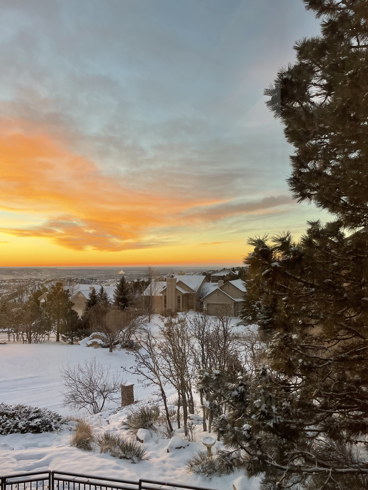

Come Out West!
One trip that I always love to go on is out west to colorful Colorado! This place has a special place in my heart and it helps that my favorite cousin lives out there as well. This trip was my first cross country roadtrip by myself! It was a little scary at first, but the independence I have gained from that was something that I can take with me forever! I decided spur of the moment that I would go out and visit over New Years! We had so many things planned before hand that we knew all the spots to go to! Can't wait to do it again soon!

Go Avalanches! First every pro hockey game was checked off my bucket list! These fans had the best energy and fun in that rink! My cousin and I were going absolutely crazy with every goal scored! Next time we are going to get a little closer to the action, but for the spur of the moment decsion, these tickets weren't that bad!
Roller skating is another thing that I can check off my bucket list! Obviously this trip was made for new, fun experiences. With a couple of bumps and falls along the way, I can officially say that I don't have to use the wall to help hold me up anymore! I was racing around doing my thing and even got my aunt to tag along with us for a couple of glides across the rinks's floor.